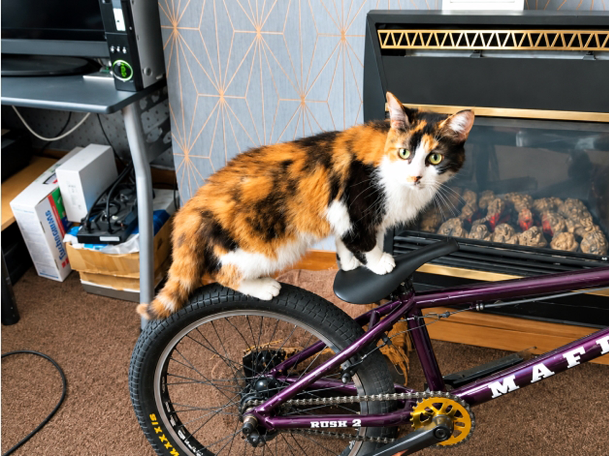
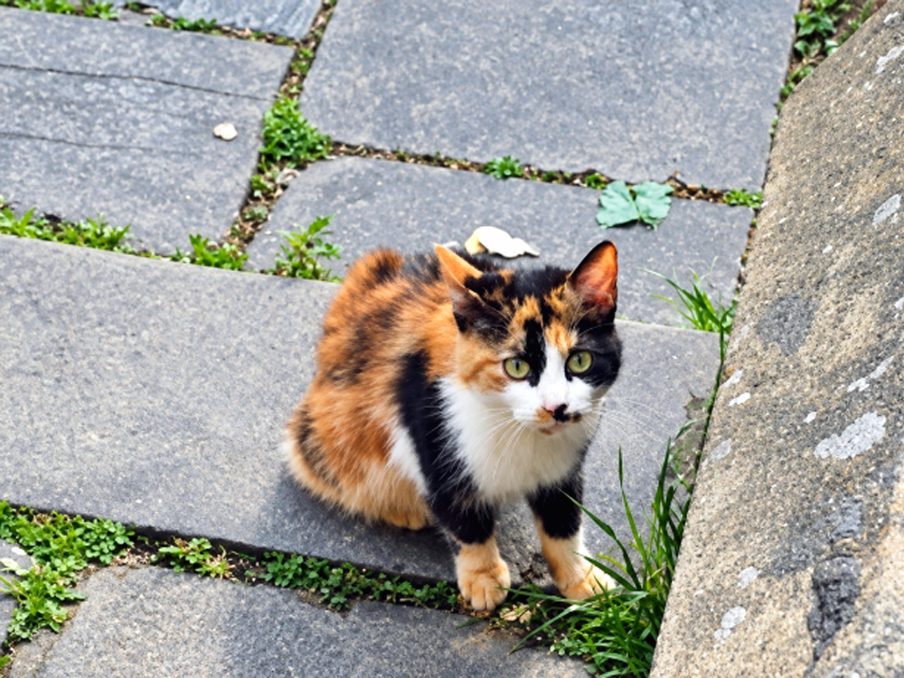
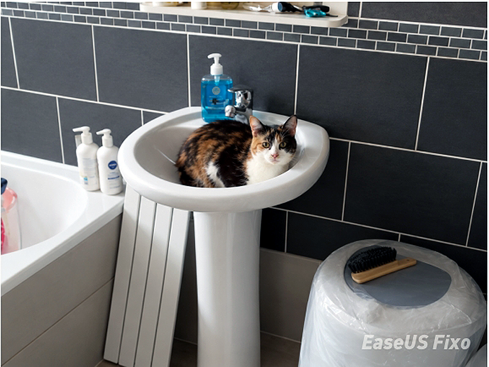
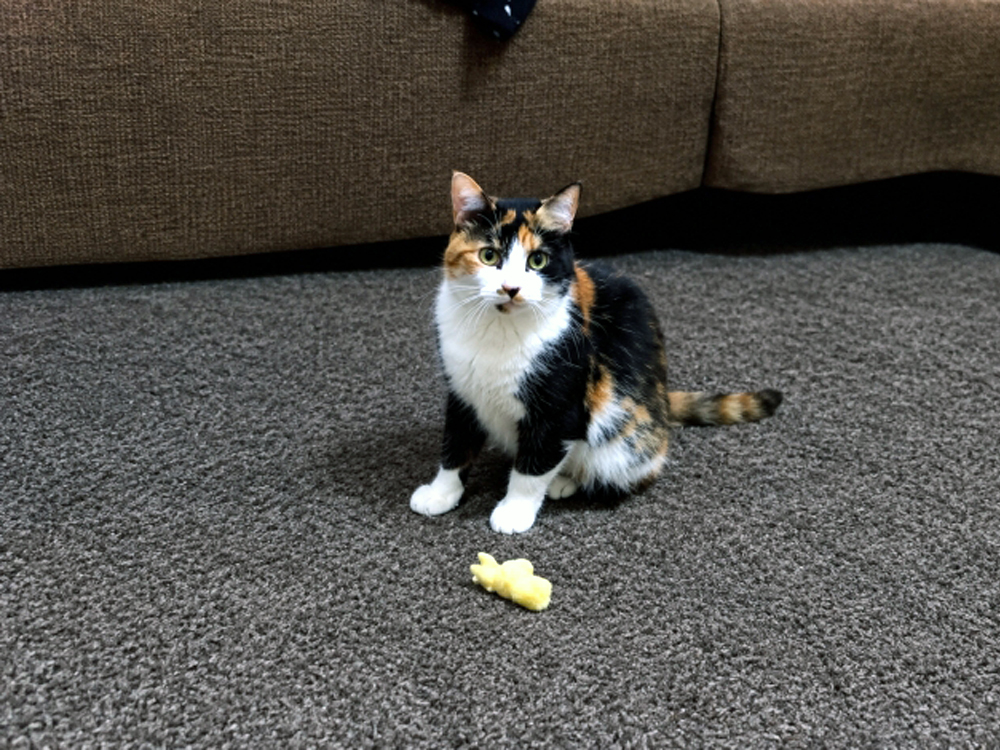
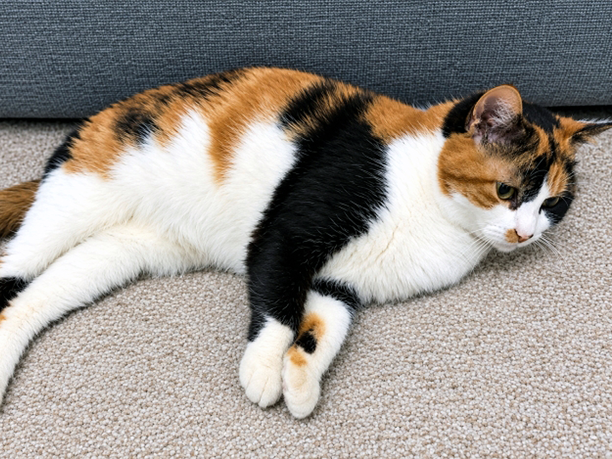
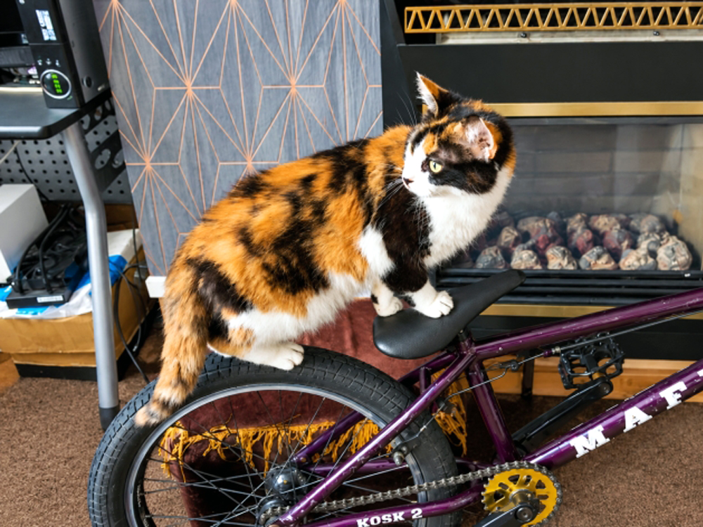
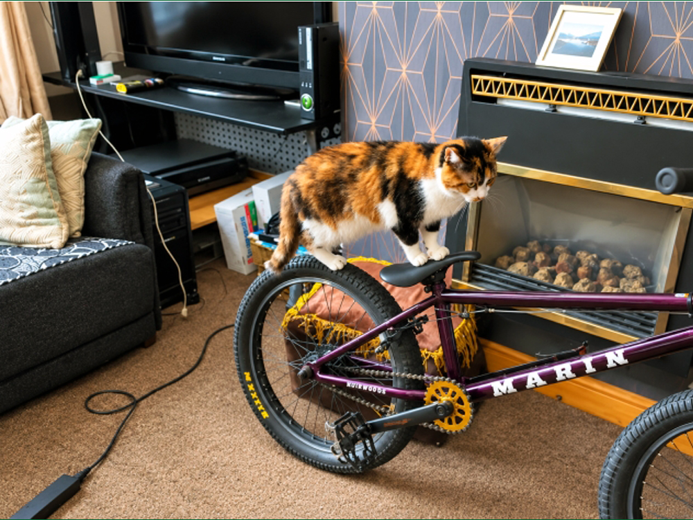
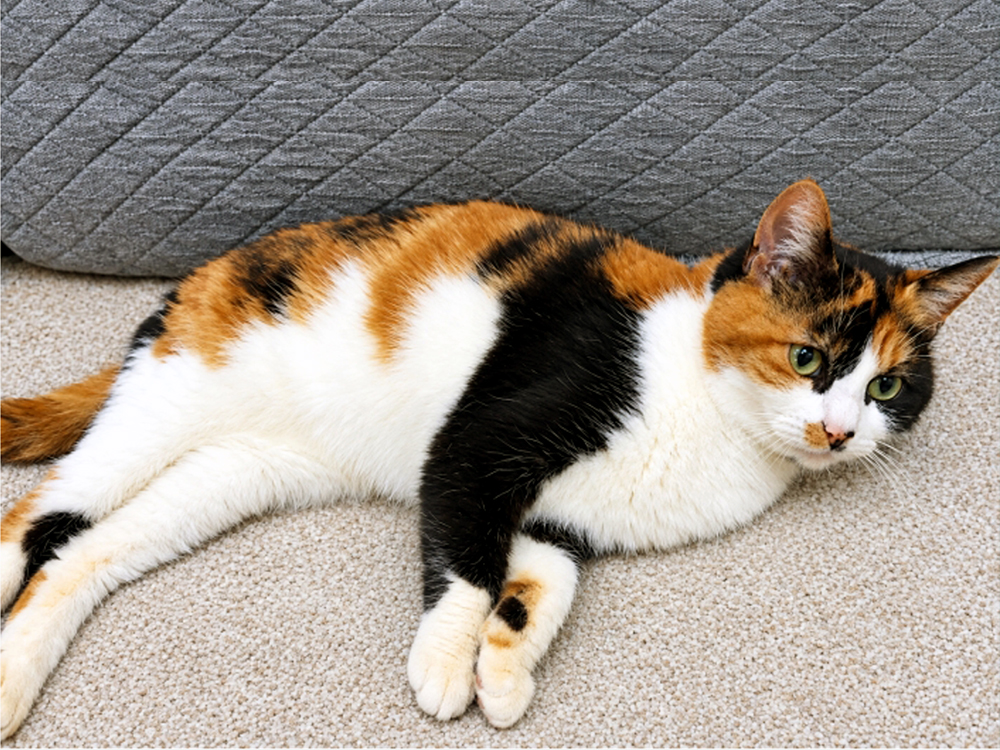
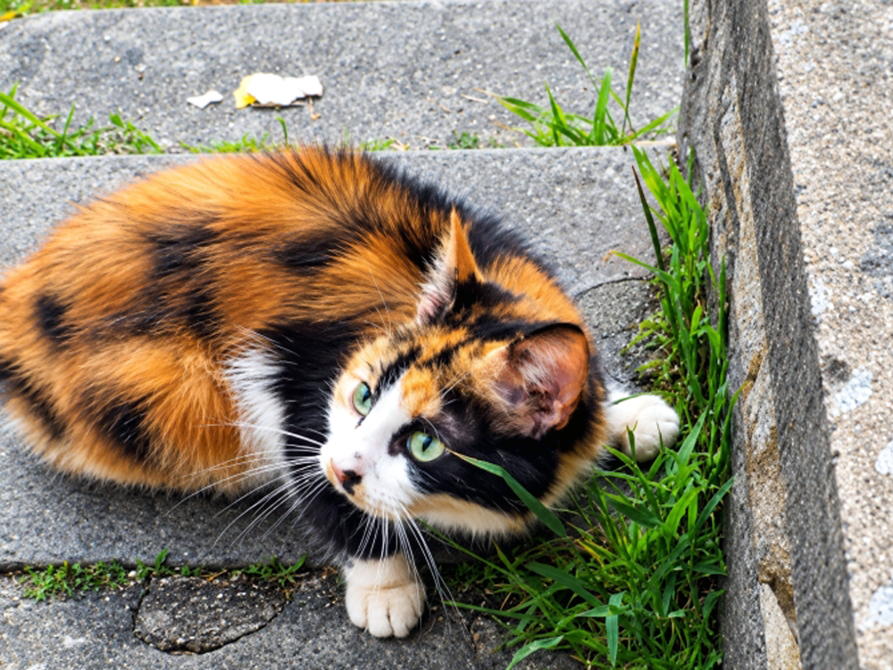
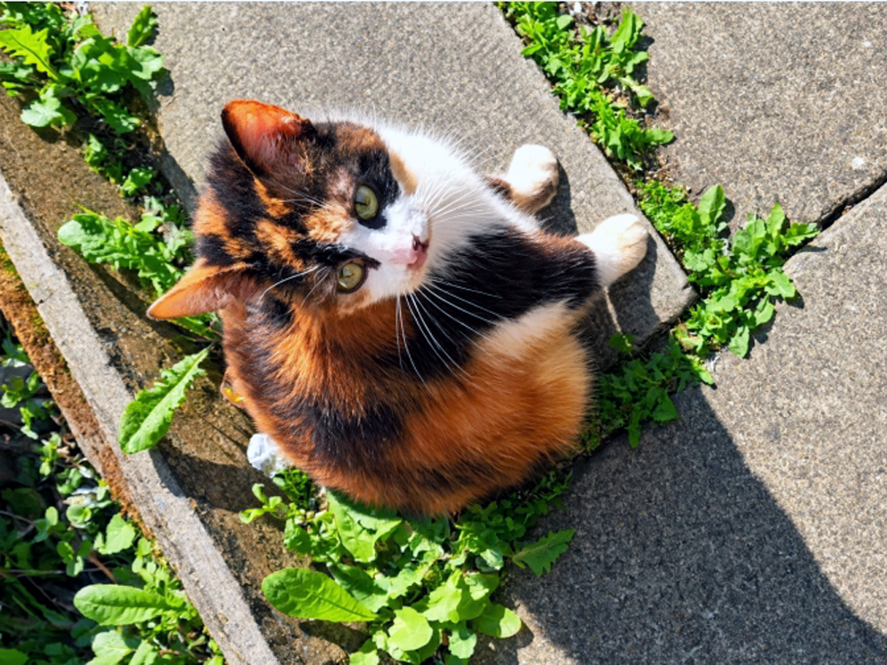

Our Sweet Companion
Sandy came into our lives on the 20th September 2010 and she immediately brought a warmth that filled every corner of our home. Whether sleeping soundly in the brightest patches of sunlight on the carpet, greeting us at the door with a gentle chirp, or demanding a lap the moment we sat down, Sandy was pure comfort and joy.
This page is a small space dedicated to keeping Sandy's memory bright. We miss the soft purrs, the playful midnight antics, and the quiet companionship. Sandy taught us so much about unconditional love and will never be forgotten.

A Miracle Journey: Lost and Found
"The unforgettable miracle of bringing her back home."
When Sandy slipped away, our home felt completely empty. We spent days putting up posters, searching the neighborhood at dusk, and calling out her name into the quiet streets. The worry was heavy, but we refused to give up hope on our beautiful girl, knowing how strong and clever she was.
Against all odds, the breakthrough came right on our back street. We spotted Sandy, but she was trapped and terrified—a local bully cat was aggressively cornering her, forcing her to hide helplessly in fear behind a high garden wall. Seeing her in danger, my son bravely jumped right up onto the wall and carefully walked all the way across the top to reach her. Though she was deeply shaken and terrified by the ordeal, she desperately wanted to come home. The moment she was safely in our arms, the pure relief was overwhelming. Having her back home where she belonged made us treasure every single day with her even more deeply.

The Local Shop Adventure
"The mysterious overnight lock-in."
Driven by her endless curiosity, Sandy managed to slip entirely unnoticed into our local neighborhood shop nearby. Unknowingly, she wandered down into the dark basement just as they were closing up for the evening. The heavy doors were shut, the shutters went down, and Sandy was officially trapped underground for the night.
We spent hours looking absolutely everywhere for her, growing more worried by the minute. The breakthrough came when we went down to the backside of our local shop in the evening when shop was closed down, at that point we heard a familiar, distinct meow sound echoing from deep within the basement! after discovering where she was we just cameback home satisfied that she is 100% safe there until shop open in the morning. Next morning the shopkeeper opened up the locked doors, we headed to the basement and there she was our little adventurer, safe, sound, and very ready to be rescued after her secret underground excursion.

Sandy's Great Triumph
"A fierce little huntress at heart."
After hours of patient tracking and stalking, Sandy finally achieved her ultimate goal: catching her first mouse. Instead of running off with her prize, she knew this was a moment meant for an audience. She held the mouse carefully in her mouth, her head held incredibly high, parading through the house like a true champion.
She strutted from room to room, completely showing off her catch to anyone who would look. You could practically feel her pride as she stood tall, demanding recognition for her hard work. It was a hilarious and unforgettable milestone that proved our sweet calico girl was just as brave and clever as she was cuddly.

Our Final, Hardest Goodbye
"Her peace was worth our broken hearts."
In her final days, our sweet Sandy began to struggle. She lost her strength, found it difficult to walk, and was limping in immense agony as her brave little body grew tired. When the doctor gently explained that her organs were failing, we had to make the most painful decision of our lives. To take away her suffering and bring her out of the pain, we gave our permission to peacefully put her to sleep.
Sandy slipped away gently in July 2023, surrounded by the absolute warmth and love she had known her entire life. While our home still feels quiet without her chirps, her midnight stories, and her proud strut, we take deep comfort in knowing that she is no longer in any pain or agony. She is running free, chasing eternal sunbeams, and resting peacefully forever in our hearts.

Sandy's Favourite Things
☀️ Sunbeam Naptime
Sandy could track a patch of sunlight moving across the living room floor with perfect, expert precision.
🌾 The Cat Grass Jungle
Chewing gently on garden grass or carefully batting at feathers was Sandy's absolute favorite way to pass an afternoon.
🗣️ Midnight Conversations
Sandy never hesitated to let us know exactly when breakfast was due, utilizing a signature, funny little trill noise.
Cherished Moments





Leave a Light for Sandy
If Sandy touched your life or you'd like to share a sweet memory with our family, please leave a thought below.